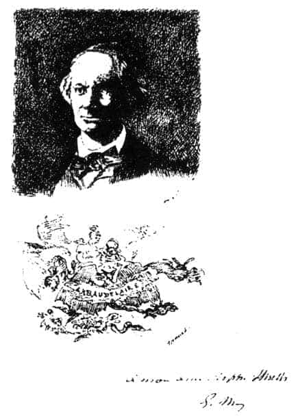

1.5. MELENCOLIA I, MONA LİSA, HAMLET, BAUDELAIRE vb.
Dürer’in alegorik gravürü Melencolia I’in gizemli etkisi, salt Rönesans döneminde değil, aydınlanma dönemi ve modern çağlarda da sürmüştür.
Ünlü Alman ressamı, reformist, Dürer’in çağdaşı, Martin Luther’in yakın arkadaşı, Lucas Cranach (1472-1553), Dürer’den etkilenmiş, kendine özgü biçemiyle, melankoli konusunu pek çok kez resimlemiştir.59
Cranach, 1528 yılında özellikle Dürer’in ölümünden sonra, sanki melankolinin ne demek olduğunu dünyaya yeniden anlatmak istercesine, melankoli adı altında pek çok çalışma yapmıştır. Olasılıkla Martin Luther ile olan dostluklarının da uzantısında, Cranach’ın resimlerindeki melankolik kadınların, Dürer’in gravürüne oranla çok anlamlı boyutlarda “dünyevi” kişilikler oldukları görülür.60 Kuşkusuz Cranach’ın çalışmaları da anıtsal yapıtlardır. Fakat bunların ruhbilimcilere olan etkileri, Dürer’e oranla görece mütevazı konumda kalmışlardır.
Dürer’in Goethe üzerinde özel bir etkisi olmuştur. Goethe, Melencolia I’deki “Özgürlüğüne kavuşma sürecinde acılar içinde kıvranan bu Rönesans tanrıçasının etkisiyle büyülenmiştir”. Goethe, Faust yapıtında Dürer’in kişiliğindeki Faustik öğeleri dizelerinde sergilemiştir. Goethe, Dürer’in yapıtlarının “Sağlıklı insan beynini sarstığını, onun altını üstüne getirdiğini” söylemiştir.61
Goethe’nin melankoli üzerine olan dizeleri, Dürer’in gravürünün belki de en güzel yorumunu yapmıştır:
“Gökkuşağı gibi duygulu şiir,
ancak karanlık bir temelden çıkarılır,
bu yüzdendir ki, dehasına şairin,
melankolik öğeler katılır.”
Ayrıca Goethe’nin Genç Werther’in Istırapları romanının yaptığı etki –Werther’in melankolik kişiliği ve intihar-“Werther sendromu” olarak iki yüzyıla yakın zamandır tıp ve yazın dünyasında tartışılmaktadır.
Goya’nın yapıtı Kapris’te (Los Capriches) (1775-79), Dürer’in etkisi tüm görkemiyle sergilenir.
Robert Burton, 1621 tarihinde yayımladığı anıtsal yapıtı Melankolinin Anatomisi ile melankoli konusunda dünyayı sarsan bir etki yaratmıştır. Bu büyük yapıt, vazgeçilmezliğini günümüzde bile korumaktadır. Robert Burton’un Melankolinin Anatomisi çalışması, Dürer’in İngiliz düşün dünyasına girmesini kolaylaştırmıştır.
Bu etkinin özellikle John Ruskin’de somutlandığı anımsanabilir. Ruskin, Dürer’in doğduğu kenti, sanatını, onun tekniğini biraz daha yakından tanımak istemiş. 1858 yılında Dürer’in kenti Nürnberg’e gitmiş. Nürnberg üzerine çeşitli desenler yapmıştır. Turner, Dürer’e özel ilgi duyan İngiliz sanatkârlar arasında sayılmıştır.
Pek çok ozan, kendi bulunduğu kenti Dürer’in gravüründeki karanlık-gri yerleşim yeri ile karşılaştırıp melankoli üzerine şiirler yazmışlardır. Bunlardan James Thomson’un Karanlık Gecede Kent (1870-74) en çok anımsananlardan biridir.62
Aydınlanma dönemi Paris atölyelerinde, insan ruhunun özgürleşme, bireyselleşme sürecinde geçirdiği acılı serüven çok kez Dürer’in Melencolia I gravürü ile birlikte anımsanmıştır. Casper David ile Eugéne Delacroix bunların arasında en önde gelenler olmuşlardır.
Delacroix, 1825 yılında, Goethe’nin Faust’unu desenlemeyi düşünürken, en büyük esin kaynağı ve yardımcısı Dürer’in gravürleri olmuştur.
Aydınlanma kültüründe, insan ruhunun, melankolinin anlaşılmasında Faust’un; Faust’un anlaşılmasında da, Dürer’in gravürünün önemli katkıları olmuştur. Bu iki başyapıt birbirlerinin anlaşılmalarında, birbirlerine katalizatör etkisinde bulunmuşlardır.
Delacroix, Faust ve Wagner’i kale kapısının önünde birlikte desenlerken, Goethe sanki Dürer’in gravürüne bakarak konuşur gibidir...
“Bu yanılgı denizinden,
çıkabileceğini umut edene ne mutlu.
Tam da bilmediklerin gerekli olur,
ve bildiklerin işe yaramaz.
....
Ah, tinin kanatları öyle kolayca
dönüşemez ki gövdenin kanatlarına.”63
Aydınlanma döneminden modernizme doğru gelişmeler sürdükçe, aydınlar arasında da iyimserlikten kötümserliğe ve hatta nihilizme ve küskünlüğe doğru eğilimler artmıştır. Bu gelişmelere yöndeş, Théohile Gautier 1834’te “Melankolia” adlı uzun şiiri yazmıştır. Gene bu koşullarda Victor Hugo’nun Dürer’e karşı özel bir ilgisi olmuş. Hugo, Dürer’in gravürüne bakarken, Hamlet’i anımsadığını söylemiş. Albrecht Dürer ile William Shakespeare, Melencolia I ile Hamlet arasındaki şaşırtıcı birlikteliğe değinmiştir.64

Edouard Manet (1832-1883), Charles Baudelaire portresi, desen ikinci aşama.
Victor Hugo’nun Dürer hayranlığı Jules Michelet’i etkilemiş. Michelet, Dürer üzerine pek çok olumlu yazı yazmıştır. Michelet’in Dürer üzerine yazdıkları bu kez Charles Baudelaire’i aynı konu üzerinde tartışmaya götürmüştür. Eduuard Manet, ünlü Baudelaire portresini yaparken (1866) resmin altına, Dürer’in gravüründeki yarasanın kanatları arasında duran panonun benzerini çizmiş. Birkaç yarasanın taşıdığı panonun üzerine, Melencolia I’in çok benzeri bir biçimle “C. H. Baudelaire” yazmıştır.65, 66
Walter Peter, bu kez Leonardo da Vinci’nin (1452-1519) ünlü yapıtı Mona Lisa (1502) ile Dürer’in melankolisi arasındaki gizil benzerliğe dikkat çekmiş.
Birinin gülümsemesine ve diğerinin hüzünlü durmalarına karşın tarihin bu iki ünlü kadınının (Femme Fatale) tinsel/ruhsal yakınlıkları tartışılmaya başlanmıştır.67
Melencolia I ile birlikte Mona Lisa ve Hamlet... Tarihin bu üç büyük gizemli kişiliği üzerine yapılan “açıklama çabaları” bugüne değin bir türlü bitmek tükenmek bilmemiştir. Umberto Eco’nun başlangıçta değindiğimiz tanımlamasını yinelersek, bu üç büyük yapıt bugüne değin bir türlü tüketilememişlerdir...
Burada, Dürer’in gravürü ile ilgili olarak, Walter Benjamin’in benzer doğrultudaki bazı dizeleri bir özdeyiş gibi anımsanabilir: “Alegori, dağılan bir dünyanın, şeylerle anlamın birbirinden koptuğu bir dünyanın biçimidir... Kültür bir bütün değil, bir enkazdır ve enkazdan ancak parçalar kurtarılabilir”... ve “Hakikati zihinsel bir bütünden çok, yıkıntılarda, eski sistemlerden arta kalanda, kırık dökük parçalarda aramak gerekir”.68